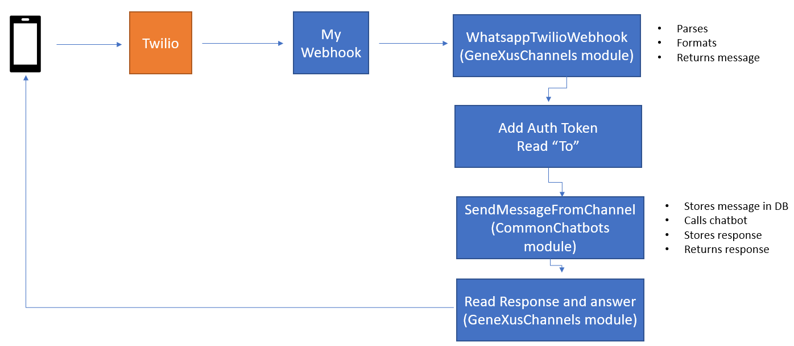
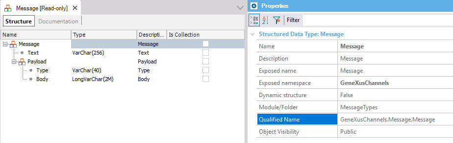
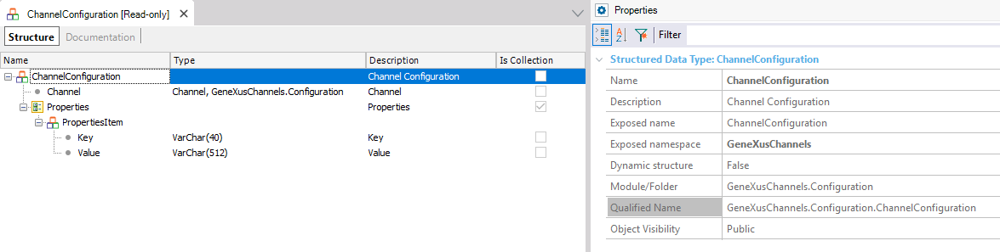

This document explains the steps needed to integrate your chatbot with WhatsApp. Here we focus on using Twilio. The architecture is as follows: Twilio receives the user messages and there is a webhook to process those messages (the webhook must be configured on Twilio). It should interact with some procedures of the GeneXusChannels module so the messages are formatted, and sent to the chatbot. Below is the architecture schema and details on the solution.  1. Configure a Twilio accountSee Chatbots using Whatsapp: How to set up Twilio. 2. Creating the WebhookThe following is a sample webhook to use with Twilio. You can download it from Chatbots sample using WhatsApp. The name of the procedure is "TwilioWppWebhook" (which has Call protocol = HTTP). Let's see the code:
//Set the Auth Token given by Twilio in the &value variable
&Value = !"111111111"
//Set the Conversational Flows instance name
&Instance = !"Rudi"
//Read the request
&Query = &HttpRequest.ToString()
//Call the GeneXusChannels module procedure that parses, formats, and returns the message.
//The message is returned in the &Message variable.
//&ChannelConfiguration is an in-out parameter that contains the details of the channel.
GeneXusChannels.Webhooks.Whatsapp.Twilio.WhatsappTwilioWebhook(&Query, &Message, &ChannelConfiguration)
//Add properties to the &ChannelConfiguration (the Auth Token).
&ChannelConfigurationProperty = new() //ChannelConfiguration.PropertiesItem
&ChannelConfigurationProperty.Key = WhatsappProperties.Token
&ChannelConfigurationProperty.Value = &Value
&ChannelConfiguration.Properties.Add(&ChannelConfigurationProperty)
//Get the telephone number of the sender of the message.
for &ChannelConfigurationProperty in &ChannelConfiguration.Properties
if &ChannelConfigurationProperty.Key = WhatsappProperties.To
&To = &ChannelConfigurationProperty.Value
endif
endfor
//Send the message to the chatbot and get the answer.
CommonChatbots.SendMessageFromChannel(&Message.Text, &To, &Instance, &AnalyzeResponse)
//Read and process the message.
for &Response in &AnalyzeResponse.GXOutputCollection
&Message.Text = &Response
if &AnalyzeResponse.Context.GXSetImageResponse
&MediaMessage.URL = &AnalyzeResponse.Context.GXResponseImage.ImageURI
&Message.Payload.Type = PayloadTypes.Media
&Message.Payload.Body = &MediaMessage.ToJson()
endif
//Send the response to Twilio.
GeneXusChannels.Message.SendMessage(&ChannelConfiguration, &Message, &Messages)
endfor
The following are some of the data types used, which are part of the GeneXusChannels Module. Message data typeThe Message SDT belongs to the GeneXusChannels Module and allows you to specify the messages to send. Define messages of a specific type, such as grids, videos, images, etc.  ChannelConfiguration data typeThis SDT is used for storing the information returned by the channel.  TroubleshootingIf the user receives no answer, please check:
AvailabilitySince GeneXus 16 upgrade 6 Note: Chatbot without NLP (command oriented) If you want to have a chatbot that doesn't use NLP (Natural Language Processing), you don't need to call the SendMessageFromChannel procedure. You only need to use the WhatsappTwilioWebhook to load the ChannelConfiguration, then process the &Message received, and use the GeneXusChannels.Message.SendMessage procedure to send the response to the final user. Do a checkout of the KB from here. |